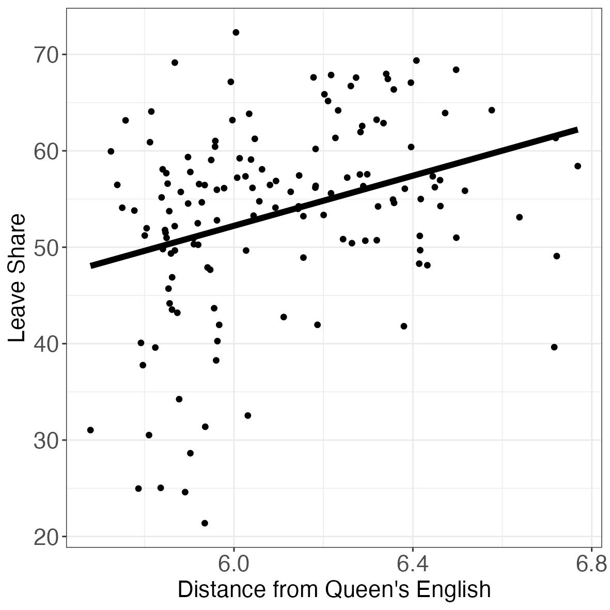

God Save the Queen’s English
Economic Origins of Class, Language, and Brexit
Motivation
This research focuses on:
- the relationship between language development and historical industrialization
- how language can become associated with class
- how language can predict voting behavior
- case study: UK
Video
Let us watch a series of short videos that motivate the research questions.
The Queen’s English
The Queen’s English
- spoken by other royals
- the sound /ɒ/ as in “Rob” and “top” is replaced /ɔ:/, as in “law”, “bored”
- is associated with prestige and elitism
Received Pronunciation (RP)
Received Pronunciation (RP)
- typically associated with South-East England
- is also associated with elitism
- speakers use /ʌ/ as in “fun”, “love” and /ʊ/ as in “put”, “look”
- in the North of England there is no difference between /ʌ/ and /ʊ/: only /ʊ/ is used
Cockney
Cockney
- typically associated with London
- speakers user glottal stops (they skip “T”) in words like “water” and “daughter”
- speakers use vocalized L
MLE or Multicultural London English
MLE or Multicultural London English
- spoken mainly by young, working-class people in multicultural parts of London
- influenced by Cockney and London’s immigrant groups from Carribean and South Asian Communities
Essex
Essex
- similar to Cockney as result of migration from London to Essex after WW2
- as in Cockney, there is vocalization of L and glottal stops
West Country
West Country
- speaker use a rhotic R so the r at the end of “car” and “far” is pronounced
Bristol
Bristol
- speaker also use a rhotic R so the r at the end of “car” and “far” is pronounced
- the accent is called Bristolian
Birmingham
Birmingham
- it features nasal pronunciation
- it has up and down intonation
- the /ɑ:/ common in the south is replaced by /æ/ as in cat and hand: e.g. last = /læst/
- the accent is called Brummie
South Yorkshire
South Yorkshire
- speakers tend to use /v/ instead of /ð/ in words containing “th” such as “brother”
Manchester
Manchester
- speakers tend to use short /ɪ/ in words ending in -y: e.g. “intensity” and “city”
- the accent is called Mancunian
Liverpool
Liverpool
- heavily influenced by the Irish community who migrated in the 19th/20th century
- speakers use fricative /k/ in words that end with /k/ e.g. “back” and “look”
- the accent is called Scouse
Newcastle
Newcastle
- speakers tend to use /æ/ as in “cat” in words ending in -er such as “ever” or “over”
- speakers use fricative /k/ in words that end with /k/ e.g. “back” and “look”
- the accent is called Geordie
Glasgow
Glasgow
- speakers use very different vowels from most of England
- /r/ is tapped which means that it is articulated by hitting the tip of the tongue on the roof of the mouth
- the accent is called Glaswegian
South Wales
South Wales
- it has more musical intonantion
- it is influenced by the Welsh language
- speakers tend to double the consonants that come between two vowels: e.g. “bottom” and “city”
Northern Ireland
Northern Ireland
- the accent is influenced by Scottish settlers to Nother Ireland centuries ago
- speakers tend to shorten the /aʊ/ diphtong as in “mouth” and “house” and articulate it foward in the mouth
Generalizability
Can we make these patterns more generalizable accross the UK geography?
Yes, with the help of surveys.
They help us identify distinct regional:
phonologies
vocabularies
grammars
Measuring Distance from the State’s Language
Phonology
- Foot and Cut - rhyme?
- Spa and Spar - Homophones?
- Eight and Ate - Homophones?
Vocabulary
- How do people refer to the item of furniture pictured here?
– Answers: sofa, couch, settee
- How do people refer to the evening meal?
– Answers: dinner, supper, tea
Grammar
- How acceptable is it to say: “You was outside?”
- How acceptable is it to say; “’I’ve not got it?”
- How acceptable is it to say; “Give it me?”
Phonology
Do “foot” and “cut” rhyme?
Are “spa” and “spar” pronounced the same?
Are “eight” and “ate” pronounced the same?
Grammar
How acceptable is it to say ‘You was outside’?
How acceptable is it to say ‘I’ve not got it’?
How acceptable is it to say ‘Give it me’?
Vocabulary
How do people call the piece of furniture picture here?
How do people refer to the evening meal?
The Queen’s English
Measuring Distance from the Queen’s English
Phonology
- Foot and Cut - rhyme?
- Spa and Spar - Homophones?
- Eight and Ate - Homophones?
Vocabulary
- How do people refer to the item of furniture pictured here?
– Answers: sofa, couch, settee
- How do people refer to the evening meal?
– Answers: dinner, supper, tea
Phonology
- Foot and Cut - rhyme?
- Spa and Spar - Homophones?
- Eight and Ate - Homophones?
Distance from the Queen’s English
Research Questions
- Where do these regional differences come from?
- Is there a (still) a connection between language and economic status?
- Given that the use of the ‘Queen’s English’ ascribes people to upper class, to what extent is that connected to politics?
Preview of the Answer
- Some of the linguistic particularities can be attributed to the Industrial Revolution.
- The Industrial Revolution caused migration to the big industrial cities.
- Certain places got overwhelmed with migrants from rural areas, Ireland, and Scotland.
- This resulted in a change in local language.
- With the demise of the old manufacturing centers, the winners of the Industrial Revolution (with newly acquired lingustic particularities) are the losers of modern times.
- Such people are more likely to be economically deprived and more vulnerable to right-wing party messaging.
Outline
Historical Background
Migration and Language: Theory
Evidence
-Migration and Language
-Language and Economic Deprivation
-Language and Voting Behavior
- Conclusion
Digital Humanities Outline
The Language Dataset
Twitter and BBC Voices Data
Occupational Data during the Industrial Revolution
Historical Railways in the UK
Outline
- Historical Background
2. Migration and Language: Theory
3. Evidence
-Migration and Language
-Language and Economic Deprivation
-Language and Voting Behavior
4. Conclusion
Where do these regional differences come from?
Natural language evolution
Language evolution caused by social factors
Mass Migration in the 18th and 19th Centuries
From 18th to 20th century - large amounts of population movement
Some people left Britain and some people came:
internal migration: urbanization lead by migration from the countryside
immigration: migrants from Germany, Italy, Ireland
emigration: e.g., between 1815 and 1918, about 16 million left
Between approx. 1800 and 1902, there were no laws forbidding immigration until 1905.
Outline
1. Historical Background
- Migration and Language: Theory
3. Evidence
-Migration and Language
-Language and Economic Deprivation
-Language and Voting Behavior
4. Conclusion
How can migration impact language?
Founder’s Principle
- Founding population presents a powerful model for later versions of speech (Mufwene, 1996)
How can migration impact language?
Founder’s Principle
- Founding population presents a powerful model for later versions of speech (Mufwene, 1996)
How can migration impact language?
Founder’s Principle
- Founding population presents a powerful model for later versions of speech (Mufwene, 1996)
How can migration impact language?
Founder’s Principle
- Founding population presents a powerful model for later versions of speech (Mufwene, 1996)
How can migration impact language?
Swamping
How can migration impact language?
Swamping
- No. of incomers greater than local population
How can migration impact language?
Swamping
No. of incomers greater than local population
Original dialect (or language) is overwhelmed -> rapid change (Lass, 1990)
How can migration impact language?
Swamping
No. of incomers greater than local population
Original dialect (or language) is overwhelmed -> rapid change (Lass, 1990)
How can migration impact language?
Swamping
No. of incomers greater than local population
Original dialect (or language) is overwhelmed -> rapid change (Lass, 1990)
How can migration impact language?
Swamping
No. of incomers greater than local population
Original dialect (or language) is overwhelmed -> rapid change (Lass, 1990)
How can migration impact language?
Swamping
No. of incomers greater than local population
Original dialect (or language) is overwhelmed -> rapid change (Lass, 1990)
Outline
1. Historical Background
2. Migration and Language: Theory
- Evidence
-Migration and Language
-Language and Economic Deprivation
-Language and Voting Behavior
4. Conclusion
Outline
1. Historical Background
2. Migration and Language: Theory
- Evidence
-Migration and Language
-Language and Economic Deprivation
-Language and Voting Behavior
4. Conclusion
Population changes
Population changes
Population changes
Population changes
Population changes
Diff-in-Diff Event Study
\[ Ln(Pop)_{i,t} = \beta_0 + \sum_{\tau \in (1400, 1900), \tau=1750} \beta_{\tau} Queen's Eng_{i} \times \mathbb{1} (t + \tau) + \alpha_i + \gamma_t + \epsilon_{i,t} \]
where:
\(\mathbb{1} (t + \tau)\) - indicator variable for each year unit
\(\alpha_i\) - City fixed effects
\(\gamma_i\) - Year fixed effects
\(\epsilon_{i,t}\) - error term
Population Changes
Population Changes
Population Increase and English, 1700
Population Increase and English, 1750
Population Increase and English, 1800
Population Increase and English, 1850
Population Increase and English, 1900
Language Preservation as Class Identity
Language Preservation as Class Identity
People get together working in similar conditions
People develop a class identity
People preserve their language as a sign of identity
Employment in Manufacturing, 1841

Employment in Manufacturing, 1841
Employment in Manufacturing, 1841
Why did the Industrial Revolution happen in the places it did?
Why did the Industrial Revolution happen in the places it did?
Short Answer: Because of access to coal
Coal Fields
Coal Fields
Carboniferous-era geological strata
Carboniferous-era geological strata
Results: Language and the Industrial Revolution
Results: Language and the Industrial Revolution

Recap: What are the historical take-aways?
The Industrial Revolution lead to greater migration to the industrial centers in the North
Some places were swamped because of migration
This is a known process in socio-linguistics which contributes to language change
Using the historical data and modern data capturing language diversity, I demonstrated how the higher distance in the North is connected to historical migration
Outline
1. Historical Background
2. Migration and Language: Theory
- Evidence
-Migration and Language
-Language and Economic Deprivation
-Language and Voting Behavior
4. Conclusion
Relevance: Why do we care?
Language (accents, grammaer, and vocabulary) are an important predictor of employment and income
speakers of low-status accents are perceived as incompetent and uneducated (Edwards, 2009; Du Bois 2019)
By contrast, RP and the Queen’s English are still associated with elitism, privilege, and high class
Is that reflected in income?
Connection between Language and Social Ladder Placement
Relevance: Why do we care?
Extensive qualitative research suggesting that class is also relevant for the way people vote
Relevance: Why do we care?
Extensive qualitative research suggesting that class is also relevant for the way people vote
Relevance: Why do we care?
Extensive qualitative research suggesting that class is also relevant for the way people vote
Relevance: Why do we care?
Extensive qualitative research suggesting that class is also relevant for the way people vote
Is this account generalizable?
Relevance: Why do we care?
Is this account generalizable?
Do people have lower trust in political authorities?
Are people from “lower classes” more likely to have voted for Brexit?
Relevance: Why do we care?
Relevance: Why do we care?
People who possess class markers (i.e. accents or higher distance from Queen’s English) - more prone to feel “left behind.”
greater anti-elite sentiment
lower social status self-placement
greater out-group resentment
Is that actually reflected in votes for Brexit?
The Queen’s English and Brexit

The Queen’s English and Brexit
The Queen’s English and Brexit
The Queen’s English and Brexit
Outline
1. Historical Background
2. Migration and Language: Theory
3. Evidence
-Migration and Language
-Language and Economic Deprivation
-Language and Voting Behavior
- Conclusion
Conclusion
- Where do linguistic regional differences come from?
- The Industrial Revolution contributed to these differences through migration
- Many industrializing towns were swamped by migrants resulting in language change
- Is there a (still) a connection between language and economic status?
- Yes! People who are in areas far away from the Queen’s English are more deprived economically
- The linguistic particularities became associated with lower class as the old manufacturing towns became the losers of globalization
- Given that the use of the ‘Queen’s English’ ascribes people to upper class, to what extent is that connected to politics?
- People who are far from the Queen’s English are more like to have voted “Leave”
Digital Humanities Outline
The Language Dataset
Twitter and BBC Voices Data
Occupational Data during the Industrial Revolution
Historical Railways in the UK
The Language Dataset
Data on language was scraped from https://www.ourdialects.uk
The Language Dataset
The Language Dataset
This was done in Python using libraries like:
- json
- requests
- csv
- re
- pandas
Twitter and BBC Voices Data
I have already scraped the BBC voices data which captural lexical diversity in the UK
I am planning to also collect Tweets from the UK and produce alternative indices measuring the “Queen’s English”
Twitter and BBC Voices Data
Occupational Data during the Industrial Revolution
Data on language was scraped from https://www.visionofbritain.org.uk
Occupational Data during the Industrial Revolution
Occupational Data during the Industrial Revolution
This was done in Python using libraries like:
- scrapy
- pandas
Historical Railways in the UK
Historical Railways in the UK
Historical Railways in the UK

Historical Railways in the UK

Thank you!
If you have questions or comments email me at: bogdan.popescu@johncabot.edu
Also check my other work at: http://bgpopescu.net
Popescu (JCU): God Save the Queen’s English